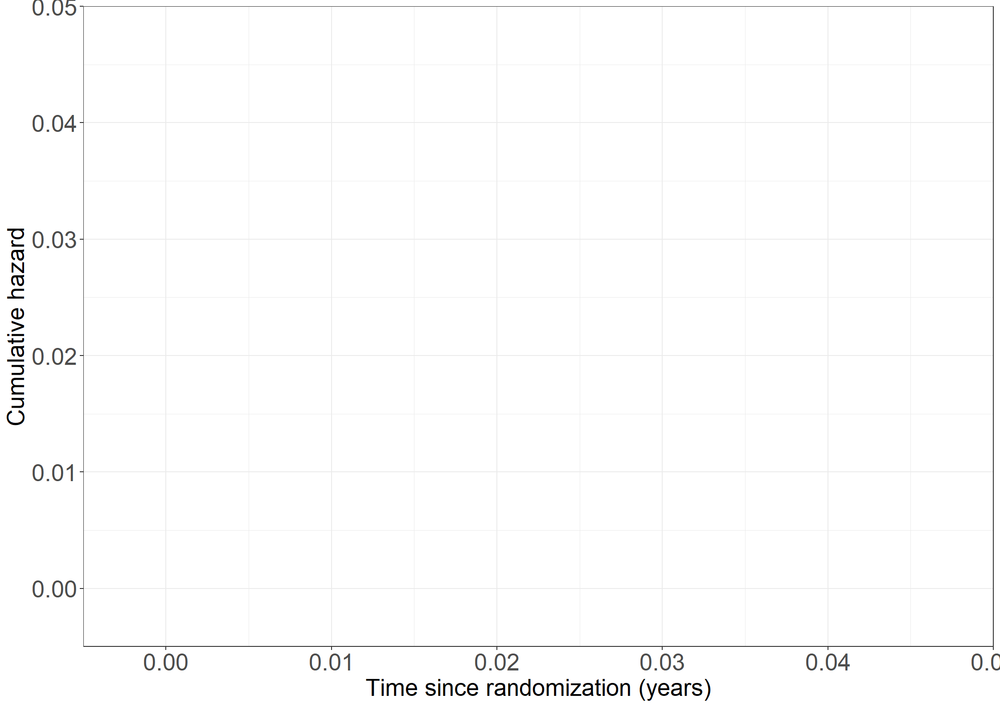

bissau <- data.frame(read.csv("data/bissau.csv"))
# Variables for age as time scale and dtp binary
bissau$agein <- with(bissau, age/(365.24/12))
bissau$ageout <- with(bissau, agein+fuptime/(365.24/12))
bissau$dtpany <- 1*with(bissau, dtp>0)3 Intensity models
Guinea-Bissau study
Read data
Table 3.1
table(bissau$bcg, bissau$dtp)
0 1 2 3
0 1942 19 9 3
1 1159 1299 582 261100*table(bissau$bcg, bissau$dtp) / rowSums(table(bissau$bcg, bissau$dtp))
0 1 2 3
0 98.4287886 0.9630005 0.4561581 0.1520527
1 35.1105726 39.3517116 17.6310209 7.9066949Table 3.2
library(survival)
coxph(Surv(agein,ageout,dead!=0)~bcg,data=bissau,method="breslow",timefix=F)Call:
coxph(formula = Surv(agein, ageout, dead != 0) ~ bcg, data = bissau,
method = "breslow", timefix = F)
coef exp(coef) se(coef) z p
bcg -0.3558 0.7006 0.1407 -2.529 0.0114
Likelihood ratio test=6.28 on 1 df, p=0.01218
n= 5274, number of events= 222 coxph(Surv(agein,ageout,dead!=0)~dtpany,data=bissau,method="breslow",timefix=F)Call:
coxph(formula = Surv(agein, ageout, dead != 0) ~ dtpany, data = bissau,
method = "breslow", timefix = F)
coef exp(coef) se(coef) z p
dtpany -0.03855 0.96218 0.14904 -0.259 0.796
Likelihood ratio test=0.07 on 1 df, p=0.7958
n= 5274, number of events= 222 coxph(Surv(agein,ageout,dead!=0)~bcg+dtpany,data=bissau,method="breslow",timefix=F)Call:
coxph(formula = Surv(agein, ageout, dead != 0) ~ bcg + dtpany,
data = bissau, method = "breslow", timefix = F)
coef exp(coef) se(coef) z p
bcg -0.5585 0.5720 0.1924 -2.902 0.0037
dtpany 0.3286 1.3890 0.2021 1.625 0.1041
Likelihood ratio test=9.01 on 2 df, p=0.01106
n= 5274, number of events= 222 coxph(Surv(agein,ageout,dead!=0)~bcg*dtpany,data=bissau,method="breslow",timefix=F)Call:
coxph(formula = Surv(agein, ageout, dead != 0) ~ bcg * dtpany,
data = bissau, method = "breslow", timefix = F)
coef exp(coef) se(coef) z p
bcg -0.5764 0.5619 0.2023 -2.849 0.00439
dtpany 0.1252 1.1334 0.7178 0.174 0.86151
bcg:dtpany 0.2212 1.2475 0.7429 0.298 0.76595
Likelihood ratio test=9.1 on 3 df, p=0.02796
n= 5274, number of events= 222 PBC3 trial
Read data
pbc3 <- data.frame(read.csv("data/pbc3.csv"))
pbc3$log2bili <- with(pbc3, log2(bili))
pbc3$years <- with(pbc3, days/365.25)Table 3.11
library(survival)
# Treatment
coxph(Surv(years, status != 0) ~ tment + alb + log2bili + tt(tment),
data = pbc3, tt = function(x,t, ...) (x==1)*t, method = "breslow")Call:
coxph(formula = Surv(years, status != 0) ~ tment + alb + log2bili +
tt(tment), data = pbc3, tt = function(x, t, ...) (x == 1) *
t, method = "breslow")
coef exp(coef) se(coef) z p
tment -0.65937 0.51718 0.40576 -1.625 0.104
alb -0.09136 0.91269 0.02167 -4.216 2.49e-05
log2bili 0.66299 1.94059 0.07478 8.866 < 2e-16
tt(tment) 0.04497 1.04600 0.17811 0.253 0.801
Likelihood ratio test=120.1 on 4 df, p=< 2.2e-16
n= 343, number of events= 88
(6 observations deleted due to missingness)coxph(Surv(years, status != 0) ~ tment + alb + log2bili + tt(tment),
data = pbc3, tt = function(x,t, ...) (x==1)*log(t), method = "breslow")Call:
coxph(formula = Surv(years, status != 0) ~ tment + alb + log2bili +
tt(tment), data = pbc3, tt = function(x, t, ...) (x == 1) *
log(t), method = "breslow")
coef exp(coef) se(coef) z p
tment -0.61330 0.54156 0.24327 -2.521 0.0117
alb -0.09152 0.91254 0.02163 -4.232 2.32e-05
log2bili 0.66214 1.93894 0.07462 8.873 < 2e-16
tt(tment) 0.10834 1.11442 0.25424 0.426 0.6700
Likelihood ratio test=120.2 on 4 df, p=< 2.2e-16
n= 343, number of events= 88
(6 observations deleted due to missingness)coxph(Surv(years, status != 0) ~ tment + alb + log2bili + tt(tment),
data = pbc3, tt = function(x,t, ...) (x==1)*(t>2), method = "breslow")Call:
coxph(formula = Surv(years, status != 0) ~ tment + alb + log2bili +
tt(tment), data = pbc3, tt = function(x, t, ...) (x == 1) *
(t > 2), method = "breslow")
coef exp(coef) se(coef) z p
tment -0.58773 0.55559 0.29228 -2.011 0.0443
alb -0.09104 0.91298 0.02168 -4.199 2.68e-05
log2bili 0.66456 1.94363 0.07466 8.901 < 2e-16
tt(tment) 0.03169 1.03220 0.43384 0.073 0.9418
Likelihood ratio test=120 on 4 df, p=< 2.2e-16
n= 343, number of events= 88
(6 observations deleted due to missingness)# Albumin
coxph(Surv(years, status != 0) ~ tment + alb + log2bili + tt(alb),
data = pbc3, tt = function(x,t, ...) x*t, method = "breslow")Call:
coxph(formula = Surv(years, status != 0) ~ tment + alb + log2bili +
tt(alb), data = pbc3, tt = function(x, t, ...) x * t, method = "breslow")
coef exp(coef) se(coef) z p
tment -0.59080 0.55389 0.22472 -2.629 0.008562
alb -0.13296 0.87550 0.03998 -3.326 0.000882
log2bili 0.66405 1.94265 0.07476 8.882 < 2e-16
tt(alb) 0.02317 1.02344 0.01854 1.250 0.211400
Likelihood ratio test=121.6 on 4 df, p=< 2.2e-16
n= 343, number of events= 88
(6 observations deleted due to missingness)coxph(Surv(years, status != 0) ~ tment + alb + log2bili + tt(alb),
data = pbc3, tt = function(x,t, ...) x*log(t), method = "breslow")Call:
coxph(formula = Surv(years, status != 0) ~ tment + alb + log2bili +
tt(alb), data = pbc3, tt = function(x, t, ...) x * log(t),
method = "breslow")
coef exp(coef) se(coef) z p
tment -0.58958 0.55456 0.22460 -2.625 0.00867
alb -0.10194 0.90308 0.02349 -4.341 1.42e-05
log2bili 0.66488 1.94425 0.07483 8.885 < 2e-16
tt(alb) 0.03347 1.03404 0.02561 1.307 0.19120
Likelihood ratio test=121.8 on 4 df, p=< 2.2e-16
n= 343, number of events= 88
(6 observations deleted due to missingness)coxph(Surv(years, status != 0) ~ tment + alb + log2bili + tt(alb),
data = pbc3, tt = function(x,t, ...) (x)*(t>2), method = "breslow")Call:
coxph(formula = Surv(years, status != 0) ~ tment + alb + log2bili +
tt(alb), data = pbc3, tt = function(x, t, ...) (x) * (t >
2), method = "breslow")
coef exp(coef) se(coef) z p
tment -0.59037 0.55412 0.22472 -2.627 0.00861
alb -0.11369 0.89254 0.02779 -4.091 4.3e-05
log2bili 0.66488 1.94426 0.07470 8.901 < 2e-16
tt(alb) 0.05674 1.05838 0.04330 1.310 0.19005
Likelihood ratio test=121.8 on 4 df, p=< 2.2e-16
n= 343, number of events= 88
(6 observations deleted due to missingness)# Log2 bilirubin
coxph(Surv(years, status != 0) ~ tment + alb + log2bili + tt(log2bili),
data = pbc3, tt = function(x,t, ...) x*t, method = "breslow")Call:
coxph(formula = Surv(years, status != 0) ~ tment + alb + log2bili +
tt(log2bili), data = pbc3, tt = function(x, t, ...) x * t,
method = "breslow")
coef exp(coef) se(coef) z p
tment -0.54631 0.57908 0.22571 -2.420 0.0155
alb -0.09009 0.91385 0.02173 -4.147 3.37e-05
log2bili 0.77736 2.17571 0.13382 5.809 6.28e-09
tt(log2bili) -0.06299 0.93895 0.06181 -1.019 0.3081
Likelihood ratio test=121.1 on 4 df, p=< 2.2e-16
n= 343, number of events= 88
(6 observations deleted due to missingness)coxph(Surv(years, status != 0) ~ tment + alb + log2bili + tt(log2bili),
data = pbc3, tt = function(x,t, ...) x*log(t), method = "breslow")Call:
coxph(formula = Surv(years, status != 0) ~ tment + alb + log2bili +
tt(log2bili), data = pbc3, tt = function(x, t, ...) x * log(t),
method = "breslow")
coef exp(coef) se(coef) z p
tment -0.55398 0.57466 0.22536 -2.458 0.014
alb -0.09050 0.91347 0.02170 -4.170 3.04e-05
log2bili 0.68779 1.98931 0.07968 8.632 < 2e-16
tt(log2bili) -0.07701 0.92588 0.08780 -0.877 0.380
Likelihood ratio test=120.8 on 4 df, p=< 2.2e-16
n= 343, number of events= 88
(6 observations deleted due to missingness)coxph(Surv(years, status != 0) ~ tment + alb + log2bili + tt(log2bili),
data = pbc3, tt = function(x,t, ...) (x)*(t>2), method = "breslow")Call:
coxph(formula = Surv(years, status != 0) ~ tment + alb + log2bili +
tt(log2bili), data = pbc3, tt = function(x, t, ...) (x) *
(t > 2), method = "breslow")
coef exp(coef) se(coef) z p
tment -0.54878 0.57765 0.22521 -2.437 0.0148
alb -0.09045 0.91352 0.02176 -4.157 3.22e-05
log2bili 0.73519 2.08587 0.09487 7.750 9.22e-15
tt(log2bili) -0.18232 0.83334 0.14910 -1.223 0.2214
Likelihood ratio test=121.5 on 4 df, p=< 2.2e-16
n= 343, number of events= 88
(6 observations deleted due to missingness)PROVA trial
Read data
prova <- data.frame(read.csv("data/prova.csv", na.strings = c(".")))
# Treatment 2x2 factorial
prova$beh <- with(prova, as.factor(scle + beta*2))
# Extra variables
provany <- prova
provany$log2bili <- with(provany, log2(bili))
provany$btime <- ifelse(provany$bleed == 1, provany$timebleed, provany$timedeath)
provany$d0time <- ifelse(provany$bleed == 1, provany$timebleed, provany$timedeath)
provany$dead0 <- ifelse(provany$bleed == 1, 0, provany$death)
provany$outof0 <- ifelse(provany$bleed == 1, 1, provany$death)
provany$bdtime <- ifelse(provany$bleed == 1, provany$timedeath, NA)
provany$deadb <- ifelse(provany$bleed == 1, provany$death, NA)
provany$wait <- ifelse(provany$bleed == 1, provany$bdtime - provany$timebleed, NA)Table 3.3
library(survival)
options(contrasts=c("contr.treatment", "contr.poly"))
## Column 1
# Variceal bleeding
coxph(Surv(btime, bleed) ~ beh, data = provany, ties = "breslow")Call:
coxph(formula = Surv(btime, bleed) ~ beh, data = provany, ties = "breslow")
coef exp(coef) se(coef) z p
beh1 0.05563 1.05721 0.39235 0.142 0.887
beh2 -0.03972 0.96106 0.40039 -0.099 0.921
beh3 -0.03205 0.96846 0.40063 -0.080 0.936
Likelihood ratio test=0.07 on 3 df, p=0.9951
n= 286, number of events= 50 # Death without bleeding
coxph(Surv(d0time, dead0) ~ beh, data = provany, ties = "breslow")Call:
coxph(formula = Surv(d0time, dead0) ~ beh, data = provany, ties = "breslow")
coef exp(coef) se(coef) z p
beh1 0.5993 1.8208 0.4498 1.332 0.1828
beh2 -0.4307 0.6501 0.5701 -0.755 0.4500
beh3 1.0146 2.7582 0.4189 2.422 0.0154
Likelihood ratio test=12.74 on 3 df, p=0.005244
n= 286, number of events= 46 # logrank test: Variceal bleeding
lr<-survdiff(Surv(btime, bleed) ~ beh, data = provany)
c(lr$chisq,lr$pvalue)[1] 0.07114524 0.99505932# logrank test: Death without bleeding
lr<-survdiff(Surv(d0time, dead0) ~ beh, data = provany)
c(lr$chisq,lr$pvalue)[1] 12.856428541 0.004957601## Column 2
# Variceal bleeding
coxph(Surv(btime, bleed) ~ beh + sex + coag + log2bili + factor(varsize),
data = provany, ties = "breslow")Call:
coxph(formula = Surv(btime, bleed) ~ beh + sex + coag + log2bili +
factor(varsize), data = provany, ties = "breslow")
coef exp(coef) se(coef) z p
beh1 0.176844 1.193445 0.433336 0.408 0.68320
beh2 0.207005 1.229989 0.424001 0.488 0.62539
beh3 0.030562 1.031034 0.420784 0.073 0.94210
sex -0.025865 0.974467 0.329095 -0.079 0.93736
coag -0.020647 0.979565 0.007819 -2.641 0.00827
log2bili 0.191011 1.210473 0.149142 1.281 0.20029
factor(varsize)2 0.741460 2.098998 0.414959 1.787 0.07397
factor(varsize)3 1.884681 6.584252 0.442325 4.261 2.04e-05
Likelihood ratio test=37.67 on 8 df, p=8.654e-06
n= 271, number of events= 47
(15 observations deleted due to missingness)# Death without bleeding
cox1<-coxph(Surv(d0time, dead0) ~ beh + sex + coag + log2bili + factor(varsize),
data = provany, ties = "breslow")
cox1Call:
coxph(formula = Surv(d0time, dead0) ~ beh + sex + coag + log2bili +
factor(varsize), data = provany, ties = "breslow")
coef exp(coef) se(coef) z p
beh1 0.826468 2.285233 0.458574 1.802 0.07151
beh2 -0.159630 0.852459 0.575047 -0.278 0.78132
beh3 0.910385 2.485279 0.420391 2.166 0.03034
sex 0.841579 2.320027 0.415722 2.024 0.04293
coag -0.008112 0.991920 0.006804 -1.192 0.23312
log2bili 0.445359 1.561051 0.136749 3.257 0.00113
factor(varsize)2 0.221738 1.248245 0.347159 0.639 0.52300
factor(varsize)3 0.753294 2.123984 0.448544 1.679 0.09307
Likelihood ratio test=42.13 on 8 df, p=1.283e-06
n= 271, number of events= 46
(15 observations deleted due to missingness)# Death without bleeding - reduced model
cox2<-coxph(Surv(d0time, dead0) ~ scle + beta + sex + coag + log2bili + factor(varsize),
data = provany, ties = "breslow")
cox2Call:
coxph(formula = Surv(d0time, dead0) ~ scle + beta + sex + coag +
log2bili + factor(varsize), data = provany, ties = "breslow")
coef exp(coef) se(coef) z p
scle 0.939205 2.557946 0.335429 2.800 0.00511
beta 0.011998 1.012071 0.305720 0.039 0.96869
sex 0.850389 2.340557 0.415216 2.048 0.04055
coag -0.008157 0.991876 0.006776 -1.204 0.22862
log2bili 0.451920 1.571327 0.135600 3.333 0.00086
factor(varsize)2 0.230482 1.259207 0.346233 0.666 0.50561
factor(varsize)3 0.758804 2.135719 0.448553 1.692 0.09071
Likelihood ratio test=42 on 7 df, p=5.204e-07
n= 271, number of events= 46
(15 observations deleted due to missingness)# LRT reduced model
library(lmtest)
lrtest(cox1,cox2)Likelihood ratio test
Model 1: Surv(d0time, dead0) ~ beh + sex + coag + log2bili + factor(varsize)
Model 2: Surv(d0time, dead0) ~ scle + beta + sex + coag + log2bili + factor(varsize)
#Df LogLik Df Chisq Pr(>Chisq)
1 8 -216.13
2 7 -216.19 -1 0.127 0.7215# Death without bleeding - 'final model'
cox3<-coxph(Surv(d0time, dead0) ~ scle + sex + coag + log2bili + factor(varsize),
data = provany, ties = "breslow")
cox3Call:
coxph(formula = Surv(d0time, dead0) ~ scle + sex + coag + log2bili +
factor(varsize), data = provany, ties = "breslow")
coef exp(coef) se(coef) z p
scle 0.941366 2.563481 0.330894 2.845 0.004442
sex 0.849376 2.338188 0.414391 2.050 0.040394
coag -0.008139 0.991894 0.006750 -1.206 0.227935
log2bili 0.452745 1.572624 0.133959 3.380 0.000726
factor(varsize)2 0.231860 1.260943 0.344458 0.673 0.500875
factor(varsize)3 0.760486 2.139316 0.446540 1.703 0.088556
Likelihood ratio test=42 on 6 df, p=1.841e-07
n= 271, number of events= 46
(15 observations deleted due to missingness)lrtest(cox2,cox3)Likelihood ratio test
Model 1: Surv(d0time, dead0) ~ scle + beta + sex + coag + log2bili + factor(varsize)
Model 2: Surv(d0time, dead0) ~ scle + sex + coag + log2bili + factor(varsize)
#Df LogLik Df Chisq Pr(>Chisq)
1 7 -216.19
2 6 -216.19 -1 0.0015 0.9687Table 3.4
# Composite
cox<-coxph(Surv(btime, outof0) ~ beh + sex + coag + log2bili + factor(varsize),
data = provany, ties = "breslow")
coxCall:
coxph(formula = Surv(btime, outof0) ~ beh + sex + coag + log2bili +
factor(varsize), data = provany, ties = "breslow")
coef exp(coef) se(coef) z p
beh1 0.525145 1.690704 0.312502 1.680 0.09287
beh2 0.100189 1.105380 0.337918 0.296 0.76686
beh3 0.494807 1.640181 0.291638 1.697 0.08976
sex 0.360259 1.433701 0.253379 1.422 0.15508
coag -0.013600 0.986492 0.005287 -2.572 0.01010
log2bili 0.328376 1.388711 0.101761 3.227 0.00125
factor(varsize)2 0.446403 1.562681 0.263275 1.696 0.08997
factor(varsize)3 1.332535 3.790639 0.301391 4.421 9.81e-06
Likelihood ratio test=65.71 on 8 df, p=3.489e-11
n= 271, number of events= 93
(15 observations deleted due to missingness)# LRT for treatment
coxreduced<-coxph(Surv(btime, outof0) ~ sex + coag + log2bili + factor(varsize),
data = provany, ties = "breslow")
lrtest(cox,coxreduced)Likelihood ratio test
Model 1: Surv(btime, outof0) ~ beh + sex + coag + log2bili + factor(varsize)
Model 2: Surv(btime, outof0) ~ sex + coag + log2bili + factor(varsize)
#Df LogLik Df Chisq Pr(>Chisq)
1 8 -455.35
2 5 -457.74 -3 4.7717 0.1893Table 3.8
# Time since randomization (tsr)
# Column 1
coxtsr<-coxph(Surv(btime, bdtime, deadb != 0) ~ beh + sex + log2bili,
data = provany, ties = "breslow")
coxtsrCall:
coxph(formula = Surv(btime, bdtime, deadb != 0) ~ beh + sex +
log2bili, data = provany, ties = "breslow")
coef exp(coef) se(coef) z p
beh0 -0.7327 0.4806 0.5439 -1.347 0.17796
beh1 -2.1454 0.1170 0.7046 -3.045 0.00233
beh2 -0.8472 0.4286 0.5694 -1.488 0.13674
sex 1.1389 3.1234 0.5039 2.260 0.02380
log2bili 0.1088 1.1149 0.2075 0.524 0.60011
Likelihood ratio test=15.35 on 5 df, p=0.008958
n= 48, number of events= 27
(238 observations deleted due to missingness)coxtsr0<-coxph(Surv(btime, bdtime, deadb != 0) ~ sex + log2bili,
data = provany, ties = "breslow")
coxtsr0Call:
coxph(formula = Surv(btime, bdtime, deadb != 0) ~ sex + log2bili,
data = provany, ties = "breslow")
coef exp(coef) se(coef) z p
sex 0.9095 2.4830 0.4807 1.892 0.0585
log2bili -0.1618 0.8506 0.1826 -0.886 0.3758
Likelihood ratio test=4.19 on 2 df, p=0.1232
n= 48, number of events= 27
(238 observations deleted due to missingness)# LRT for beh
library(lmtest)
lrtest(coxtsr,coxtsr0)Likelihood ratio test
Model 1: Surv(btime, bdtime, deadb != 0) ~ beh + sex + log2bili
Model 2: Surv(btime, bdtime, deadb != 0) ~ sex + log2bili
#Df LogLik Df Chisq Pr(>Chisq)
1 5 -59.626
2 2 -65.208 -3 11.164 0.01087 *
---
Signif. codes: 0 '***' 0.001 '**' 0.01 '*' 0.05 '.' 0.1 ' ' 1coxnoint<-coxph(Surv(btime, bdtime, deadb != 0) ~ scle + beta + sex + log2bili,
data = provany, ties = "breslow")
# LRT interaction
lrtest(coxtsr,coxnoint)Likelihood ratio test
Model 1: Surv(btime, bdtime, deadb != 0) ~ beh + sex + log2bili
Model 2: Surv(btime, bdtime, deadb != 0) ~ scle + beta + sex + log2bili
#Df LogLik Df Chisq Pr(>Chisq)
1 5 -59.626
2 4 -63.061 -1 6.8707 0.008762 **
---
Signif. codes: 0 '***' 0.001 '**' 0.01 '*' 0.05 '.' 0.1 ' ' 1# Column 2
provany$tsb<-provany$btime
coxtsr_tt<-coxph(Surv(btime, bdtime, deadb != 0) ~ beh + sex + log2bili+tt(tsb),
data = provany, ties = "breslow",
tt=function(x, t, ...) {
dt <- t-x
cbind(dt1=1*(dt<5), dt2=1*(dt>=5 & dt<10))
})
coxtsr_ttCall:
coxph(formula = Surv(btime, bdtime, deadb != 0) ~ beh + sex +
log2bili + tt(tsb), data = provany, ties = "breslow", tt = function(x,
t, ...) {
dt <- t - x
cbind(dt1 = 1 * (dt < 5), dt2 = 1 * (dt >= 5 & dt < 10))
})
coef exp(coef) se(coef) z p
beh0 -0.42544 0.65348 0.61129 -0.696 0.48645
beh1 -1.58150 0.20567 0.75830 -2.086 0.03702
beh2 -0.44915 0.63817 0.63022 -0.713 0.47604
sex 1.11875 3.06103 0.53261 2.101 0.03568
log2bili -0.04822 0.95292 0.22285 -0.216 0.82869
tt(tsb)dt1 2.94285 18.96981 0.73891 3.983 6.81e-05
tt(tsb)dt2 2.34525 10.43583 0.80285 2.921 0.00349
Likelihood ratio test=33.65 on 7 df, p=2.005e-05
n= 48, number of events= 27
(238 observations deleted due to missingness)# LRT for time-dependent covariates
lrtest(coxtsr,coxtsr_tt)Likelihood ratio test
Model 1: Surv(btime, bdtime, deadb != 0) ~ beh + sex + log2bili
Model 2: Surv(btime, bdtime, deadb != 0) ~ beh + sex + log2bili + tt(tsb)
#Df LogLik Df Chisq Pr(>Chisq)
1 5 -59.626
2 7 -50.478 2 18.295 0.0001065 ***
---
Signif. codes: 0 '***' 0.001 '**' 0.01 '*' 0.05 '.' 0.1 ' ' 1# or as mentioned in text, model linear effect of time-dependent covariate
coxph(Surv(btime, bdtime, deadb != 0) ~ beh+sex + log2bili+tt(tsb),
data = provany, ties = "breslow",
tt=function(x, t, ...){t-x})Call:
coxph(formula = Surv(btime, bdtime, deadb != 0) ~ beh + sex +
log2bili + tt(tsb), data = provany, ties = "breslow", tt = function(x,
t, ...) {
t - x
})
coef exp(coef) se(coef) z p
beh0 -0.599364 0.549161 0.574135 -1.044 0.29651
beh1 -2.061624 0.127247 0.724588 -2.845 0.00444
beh2 -0.627738 0.533798 0.618629 -1.015 0.31024
sex 0.899664 2.458776 0.530853 1.695 0.09012
log2bili 0.349775 1.418749 0.224830 1.556 0.11977
tt(tsb) -0.005179 0.994834 0.001769 -2.927 0.00342
Likelihood ratio test=25.54 on 6 df, p=0.0002708
n= 48, number of events= 27
(238 observations deleted due to missingness)coxtsr_tt_reduced<-coxph(Surv(btime, bdtime, deadb != 0) ~ sex + log2bili+tt(tsb),
data = provany, ties = "breslow",
tt=function(x, t, ...) {
dt <- t-x
cbind(dt1=1*(dt<5), dt2=1*(dt>=5 & dt<10))
})
coxtsr_tt_reducedCall:
coxph(formula = Surv(btime, bdtime, deadb != 0) ~ sex + log2bili +
tt(tsb), data = provany, ties = "breslow", tt = function(x,
t, ...) {
dt <- t - x
cbind(dt1 = 1 * (dt < 5), dt2 = 1 * (dt >= 5 & dt < 10))
})
coef exp(coef) se(coef) z p
sex 0.8381 2.3120 0.4977 1.684 0.09219
log2bili -0.2288 0.7955 0.1965 -1.164 0.24434
tt(tsb)dt1 3.1553 23.4609 0.6683 4.721 2.34e-06
tt(tsb)dt2 2.3585 10.5748 0.7857 3.002 0.00268
Likelihood ratio test=28.44 on 4 df, p=1.015e-05
n= 48, number of events= 27
(238 observations deleted due to missingness)# LRT for beh
lrtest(coxtsr_tt,coxtsr_tt_reduced)Likelihood ratio test
Model 1: Surv(btime, bdtime, deadb != 0) ~ beh + sex + log2bili + tt(tsb)
Model 2: Surv(btime, bdtime, deadb != 0) ~ sex + log2bili + tt(tsb)
#Df LogLik Df Chisq Pr(>Chisq)
1 7 -50.478
2 4 -53.081 -3 5.2064 0.1573# Duration
# Column 1
coxdur<-coxph(Surv(wait, deadb != 0) ~ beh + sex + log2bili,
data = provany, ties = "breslow")
coxdurCall:
coxph(formula = Surv(wait, deadb != 0) ~ beh + sex + log2bili,
data = provany, ties = "breslow")
coef exp(coef) se(coef) z p
beh0 -0.8708 0.4186 0.5136 -1.695 0.08999
beh1 -1.8679 0.1544 0.6373 -2.931 0.00338
beh2 -1.1704 0.3103 0.5915 -1.979 0.04785
sex 0.6497 1.9149 0.5264 1.234 0.21712
log2bili 0.2677 1.3070 0.1790 1.496 0.13463
Likelihood ratio test=13.24 on 5 df, p=0.0212
n= 48, number of events= 27
(238 observations deleted due to missingness)coxdur0<-coxph(Surv(wait, deadb != 0) ~ sex + log2bili,
data = provany, ties = "breslow")
coxdur0Call:
coxph(formula = Surv(wait, deadb != 0) ~ sex + log2bili, data = provany,
ties = "breslow")
coef exp(coef) se(coef) z p
sex 0.6742 1.9625 0.4662 1.446 0.148
log2bili 0.1210 1.1286 0.1677 0.721 0.471
Likelihood ratio test=3.03 on 2 df, p=0.2195
n= 48, number of events= 27
(238 observations deleted due to missingness)# LRT for beh
lrtest(coxdur,coxdur0)Likelihood ratio test
Model 1: Surv(wait, deadb != 0) ~ beh + sex + log2bili
Model 2: Surv(wait, deadb != 0) ~ sex + log2bili
#Df LogLik Df Chisq Pr(>Chisq)
1 5 -86.494
2 2 -91.600 -3 10.211 0.01685 *
---
Signif. codes: 0 '***' 0.001 '**' 0.01 '*' 0.05 '.' 0.1 ' ' 1# Column 2
provany$tsr<-provany$btime
coxdur_tt<-coxph(Surv(wait, deadb != 0) ~ beh + sex + log2bili+tt(tsr),
data = provany, ties = "breslow",
tt=function(x, t, ...) {
dt <- x+t
cbind(v1=1*(dt<1*365.25), v2=1*(dt>=1*365.25 & dt<2*365.25))
})
coxdur_ttCall:
coxph(formula = Surv(wait, deadb != 0) ~ beh + sex + log2bili +
tt(tsr), data = provany, ties = "breslow", tt = function(x,
t, ...) {
dt <- x + t
cbind(v1 = 1 * (dt < 1 * 365.25), v2 = 1 * (dt >= 1 * 365.25 &
dt < 2 * 365.25))
})
coef exp(coef) se(coef) z p
beh0 -0.8467 0.4288 0.5244 -1.615 0.10639
beh1 -1.8660 0.1547 0.6400 -2.916 0.00355
beh2 -1.1583 0.3140 0.5964 -1.942 0.05211
sex 0.6441 1.9043 0.5303 1.215 0.22455
log2bili 0.2829 1.3269 0.1966 1.439 0.15012
tt(tsr)v1 -0.1723 0.8417 0.9096 -0.189 0.84973
tt(tsr)v2 -0.2211 0.8016 0.8862 -0.250 0.80297
Likelihood ratio test=13.31 on 7 df, p=0.065
n= 48, number of events= 27
(238 observations deleted due to missingness)# LRT for time-dependent covariates
lrtest(coxdur,coxdur_tt)Likelihood ratio test
Model 1: Surv(wait, deadb != 0) ~ beh + sex + log2bili
Model 2: Surv(wait, deadb != 0) ~ beh + sex + log2bili + tt(tsr)
#Df LogLik Df Chisq Pr(>Chisq)
1 5 -86.494
2 7 -86.464 2 0.0618 0.9696coxdur_tt_reduced<-coxph(Surv(btime, bdtime, deadb != 0) ~ sex + log2bili+tt(tsb),
data = provany, ties = "breslow",
tt=function(x, t, ...) {
dt <- t-x
cbind(dt1=1*(dt<5), dt2=1*(dt>=5 & dt<10))
})Figure 3.2
# Plotting style
library(ggplot2)
library(tidyverse)
theme_general <- theme_bw() +
theme(legend.position = "bottom",
text = element_text(size = 20),
axis.text.x = element_text(size = 20),
axis.text.y = element_text(size = 20))
# Make zeros print as "0" always for plot axes
library(stringr)
prettyZero <- function(l){
max.decimals = max(nchar(str_extract(l, "\\.[0-9]+")), na.rm = T)-1
lnew = formatC(l, replace.zero = T, zero.print = "0",
digits = max.decimals, format = "f", preserve.width=T)
return(lnew)
}
# Extract cumulative baseline hazard
coxcumhaz <- survfit(coxtsr,
newdata = data.frame(sex = 0,
beh = "0",
log2bili = 0))
# Collect data for plot
coxdata <- data.frame(cumhaz = append(0,coxcumhaz$cumhaz),
time = append(0,coxcumhaz$time),
type = rep("Breslow estimate", 1+length(coxcumhaz$time)))
# Create Figure 3.2
fig3.2 <- ggplot(aes(x = time / 365.25, y = cumhaz), data = coxdata) +
geom_step(linewidth = 1) +
xlab("Time since randomization (years)") +
ylab("Cumulative hazard") +
scale_x_continuous(expand = expansion(mult = c(0.005, 0.05))) +
scale_y_continuous(expand = expansion(mult = c(0.005, 0.05))) +
theme_general
fig3.2
Figure 3.3
# Extract cumulative baseline hazard
coxcumhaz <- survfit(coxdur,
newdata = data.frame(sex = 0,
beh = "0",
log2bili = 0))
# Collect data for plot
coxdata <- data.frame(cumhaz = append(0,coxcumhaz$cumhaz),
time = append(0,coxcumhaz$time),
type = rep("Breslow estimate", 1+length(coxcumhaz$time)))
# Create Figure 3.3
fig3.3 <- ggplot(aes(x = time / 365.25, y = cumhaz), data = coxdata) +
geom_step(linewidth = 1) +
xlab("Duration (years)") +
ylab("Cumulative hazard") +
scale_x_continuous(expand = expansion(mult = c(0.005, 0.05)), ) +
scale_y_continuous(expand = expansion(mult = c(0.005, 0.05)),labels = prettyZero) +
theme_general
fig3.3
Table 3.9
# All bleeds
provasplit11 <- subset(provany, bleed == 1)
# Split by duration
provasplit1 <- survSplit(Surv(wait, deadb != 0) ~ ., data = provasplit11,
cut = c(5, 10),
episode = "wint")
provasplit1$start <- with(provasplit1,
btime + ifelse(wint == 1, 0, ifelse(wint == 2, 5 , 10))
)
provasplit1$stop <- with(provasplit1, btime + wait)
provasplit1$risktime <- with(provasplit1, wait - tstart)
provasplit1$logrisktime <- log(provasplit1$risktime)
provasplit1$fail <- provasplit1$event
# Split by time since rand (t)
provasplit2 <- survSplit(Surv(start, stop, fail) ~ ., data = provasplit1,
cut = c((1) * 365.25, (2) * 365.25),
episode = "tint")
provasplit2$risktime2 <- with(provasplit2, stop - start)
provasplit2$risktimeys2 <- provasplit2$risktime2 / 365.25
provasplit2$logrisktime2 <- log(provasplit2$risktime2)
provasplit2$fail2 <- provasplit2$fail
# Summarize the data, Table 3.9 output
aggregate(cbind(fail2, risktimeys2) ~ tint + wint, provasplit2,
FUN = function(x) c(count = length(x),
sum = sum(x))) tint wint fail2.count fail2.sum risktimeys2.count risktimeys2.sum
1 1 1 39 8 39.00000000 0.46338125
2 2 1 11 2 11.00000000 0.13073238
3 3 1 1 0 1.00000000 0.01368925
4 1 2 30 2 30.00000000 0.38603696
5 2 2 9 1 9.00000000 0.11635866
6 3 2 1 0 1.00000000 0.01368925
7 1 3 28 7 28.00000000 12.42984257
8 2 3 28 5 28.00000000 19.88227242
9 3 3 19 4 19.00000000 21.56468172Table 3.10
# part (a)
summary(glm(fail ~ offset(log(risktime)) + beh + relevel(as.factor(wint), ref = "3") +
sex + log2bili, data = provasplit1, family = poisson))
Call:
glm(formula = fail ~ offset(log(risktime)) + beh + relevel(as.factor(wint),
ref = "3") + sex + log2bili, family = poisson, data = provasplit1)
Coefficients:
Estimate Std. Error z value Pr(>|z|)
(Intercept) -8.8925 1.1282 -7.882 3.21e-15 ***
beh1 -1.1301 0.6423 -1.759 0.0785 .
beh2 -0.3138 0.5887 -0.533 0.5940
beh3 0.9667 0.5157 1.874 0.0609 .
relevel(as.factor(wint), ref = "3")1 3.6024 0.4387 8.212 < 2e-16 ***
relevel(as.factor(wint), ref = "3")2 2.8437 0.6373 4.462 8.11e-06 ***
sex 0.7327 0.5190 1.412 0.1581
log2bili 0.2877 0.1824 1.577 0.1147
---
Signif. codes: 0 '***' 0.001 '**' 0.01 '*' 0.05 '.' 0.1 ' ' 1
(Dispersion parameter for poisson family taken to be 1)
Null deviance: 225.56 on 122 degrees of freedom
Residual deviance: 149.88 on 115 degrees of freedom
(4 observations deleted due to missingness)
AIC: 219.88
Number of Fisher Scoring iterations: 8# part (b)
summary(glm(fail2 ~ offset(log(risktime2)) + beh + relevel(as.factor(tint), ref = "3") +
sex + log2bili, data = provasplit2, family = poisson))
Call:
glm(formula = fail2 ~ offset(log(risktime2)) + beh + relevel(as.factor(tint),
ref = "3") + sex + log2bili, family = poisson, data = provasplit2)
Coefficients:
Estimate Std. Error z value Pr(>|z|)
(Intercept) -8.6775 1.2008 -7.226 4.96e-13 ***
beh1 -1.2810 0.6522 -1.964 0.0495 *
beh2 -0.4317 0.5657 -0.763 0.4454
beh3 0.8006 0.5254 1.524 0.1275
relevel(as.factor(tint), ref = "3")1 1.5068 0.5785 2.605 0.0092 **
relevel(as.factor(tint), ref = "3")2 0.4304 0.6482 0.664 0.5067
sex 0.9494 0.4922 1.929 0.0538 .
log2bili 0.1792 0.2049 0.875 0.3817
---
Signif. codes: 0 '***' 0.001 '**' 0.01 '*' 0.05 '.' 0.1 ' ' 1
(Dispersion parameter for poisson family taken to be 1)
Null deviance: 237.84 on 160 degrees of freedom
Residual deviance: 202.95 on 153 degrees of freedom
(5 observations deleted due to missingness)
AIC: 272.95
Number of Fisher Scoring iterations: 8# part (c)
summary(glm(fail2 ~ offset(log(risktime2)) + beh +
relevel(as.factor(wint), ref = "3") +
relevel(as.factor(tint), ref = "3") +
sex + log2bili, data = provasplit2, family = poisson))
Call:
glm(formula = fail2 ~ offset(log(risktime2)) + beh + relevel(as.factor(wint),
ref = "3") + relevel(as.factor(tint), ref = "3") + sex +
log2bili, family = poisson, data = provasplit2)
Coefficients:
Estimate Std. Error z value Pr(>|z|)
(Intercept) -8.9276 1.1636 -7.673 1.68e-14 ***
beh1 -1.1101 0.6475 -1.714 0.0864 .
beh2 -0.3181 0.5788 -0.550 0.5826
beh3 0.8260 0.5138 1.608 0.1079
relevel(as.factor(wint), ref = "3")1 3.3500 0.4641 7.219 5.25e-13 ***
relevel(as.factor(wint), ref = "3")2 2.5827 0.6593 3.917 8.97e-05 ***
relevel(as.factor(tint), ref = "3")1 0.7325 0.6176 1.186 0.2356
relevel(as.factor(tint), ref = "3")2 0.1889 0.6546 0.289 0.7729
sex 0.7672 0.5090 1.507 0.1317
log2bili 0.2301 0.1900 1.211 0.2260
---
Signif. codes: 0 '***' 0.001 '**' 0.01 '*' 0.05 '.' 0.1 ' ' 1
(Dispersion parameter for poisson family taken to be 1)
Null deviance: 237.84 on 160 degrees of freedom
Residual deviance: 160.21 on 151 degrees of freedom
(5 observations deleted due to missingness)
AIC: 234.21
Number of Fisher Scoring iterations: 7# Interaction model, in-text but not shown
summary(glm(fail2 ~ offset(log(risktime2)) + beh + as.factor(tint) * as.factor(wint) + sex + log2bili,
data = provasplit2, family = poisson)
)
Call:
glm(formula = fail2 ~ offset(log(risktime2)) + beh + as.factor(tint) *
as.factor(wint) + sex + log2bili, family = poisson, data = provasplit2)
Coefficients:
Estimate Std. Error z value Pr(>|z|)
(Intercept) -4.72678 1.20626 -3.919 8.91e-05 ***
beh1 -1.09421 0.64703 -1.691 0.0908 .
beh2 -0.31016 0.57923 -0.535 0.5923
beh3 0.83850 0.51484 1.629 0.1034
as.factor(tint)2 -0.74368 1.06413 -0.699 0.4846
as.factor(tint)3 -14.39376 1275.75399 -0.011 0.9910
as.factor(wint)2 -1.03184 0.79349 -1.300 0.1935
as.factor(wint)3 -3.37183 0.51906 -6.496 8.24e-11 ***
sex 0.77074 0.50839 1.516 0.1295
log2bili 0.21347 0.18999 1.124 0.2612
as.factor(tint)2:as.factor(wint)2 1.26419 1.62046 0.780 0.4353
as.factor(tint)3:as.factor(wint)2 1.03184 1804.18859 0.001 0.9995
as.factor(tint)2:as.factor(wint)3 0.08176 1.23780 0.066 0.9473
as.factor(tint)3:as.factor(wint)3 13.70295 1275.75414 0.011 0.9914
---
Signif. codes: 0 '***' 0.001 '**' 0.01 '*' 0.05 '.' 0.1 ' ' 1
(Dispersion parameter for poisson family taken to be 1)
Null deviance: 237.84 on 160 degrees of freedom
Residual deviance: 158.93 on 147 degrees of freedom
(5 observations deleted due to missingness)
AIC: 240.93
Number of Fisher Scoring iterations: 13# LRT for time-dependent covariates
glmboth<-glm(fail2 ~ offset(log(risktime2)) + beh +
relevel(as.factor(wint), ref = "3") +
relevel(as.factor(tint), ref = "3") +
sex + log2bili, data = provasplit2, family = poisson)
glmwint<-glm(fail2 ~ offset(log(risktime2)) + beh +
relevel(as.factor(wint), ref = "3") +
sex + log2bili, data = provasplit2, family = poisson)
glmtint<-glm(fail2 ~ offset(log(risktime2)) + beh +
relevel(as.factor(tint), ref = "3") +
sex + log2bili, data = provasplit2, family = poisson)
# LRT effect of duration since bleeding
lrtest(glmboth,glmtint)Likelihood ratio test
Model 1: fail2 ~ offset(log(risktime2)) + beh + relevel(as.factor(wint),
ref = "3") + relevel(as.factor(tint), ref = "3") + sex +
log2bili
Model 2: fail2 ~ offset(log(risktime2)) + beh + relevel(as.factor(tint),
ref = "3") + sex + log2bili
#Df LogLik Df Chisq Pr(>Chisq)
1 10 -107.11
2 8 -128.47 -2 42.736 5.248e-10 ***
---
Signif. codes: 0 '***' 0.001 '**' 0.01 '*' 0.05 '.' 0.1 ' ' 1# LRT effect of time since randomization
lrtest(glmboth,glmwint)Likelihood ratio test
Model 1: fail2 ~ offset(log(risktime2)) + beh + relevel(as.factor(wint),
ref = "3") + relevel(as.factor(tint), ref = "3") + sex +
log2bili
Model 2: fail2 ~ offset(log(risktime2)) + beh + relevel(as.factor(wint),
ref = "3") + sex + log2bili
#Df LogLik Df Chisq Pr(>Chisq)
1 10 -107.11
2 8 -108.08 -2 1.9499 0.3772Table 3.13
# Prepare data set for analysis - double
double1 <- provany %>% mutate(time = d0time,
status = dead0,
entrytime = 0,
sex1 = sex,
sex2 = 0,
age1 = age,
age2 = 0,
bili1 = log2bili,
bili2 = log2bili * 0,
bleeding = 1)
double2 <- provany %>% filter(bleed == 1) %>%
mutate(time = bdtime,
status = deadb,
entrytime = btime,
sex1 = 0,
sex2 = sex,
age1 = 0,
age2 = age,
bili1 = log2bili * 0,
bili2 = log2bili,
bleeding = 2)
double <- as.data.frame(rbind(double1, double2))
# part (a)
Table3.13a <- coxph(Surv(entrytime, time, status != 0) ~ strata(bleeding) + sex1 + sex2 + bili1 + bili2,
data = double, ties = "breslow")
Table3.13aCall:
coxph(formula = Surv(entrytime, time, status != 0) ~ strata(bleeding) +
sex1 + sex2 + bili1 + bili2, data = double, ties = "breslow")
coef exp(coef) se(coef) z p
sex1 1.0408 2.8316 0.4110 2.532 0.0113
sex2 0.9095 2.4830 0.4807 1.892 0.0585
bili1 0.5275 1.6947 0.1152 4.580 4.64e-06
bili2 -0.1618 0.8506 0.1826 -0.886 0.3758
Likelihood ratio test=32.5 on 4 df, p=1.509e-06
n= 323, number of events= 73
(13 observations deleted due to missingness)# part (b)
Table3.13b <- coxph(Surv(entrytime, time, status != 0) ~ strata(bleeding) + sex + bili1 + bili2,
data = double, ties = "breslow")
Table3.13bCall:
coxph(formula = Surv(entrytime, time, status != 0) ~ strata(bleeding) +
sex + bili1 + bili2, data = double, ties = "breslow")
coef exp(coef) se(coef) z p
sex 0.9866 2.6820 0.3115 3.167 0.00154
bili1 0.5269 1.6936 0.1150 4.582 4.61e-06
bili2 -0.1685 0.8449 0.1794 -0.939 0.34767
Likelihood ratio test=32.46 on 3 df, p=4.185e-07
n= 323, number of events= 73
(13 observations deleted due to missingness)# LRT sex
lrtest(Table3.13a, Table3.13b)Likelihood ratio test
Model 1: Surv(entrytime, time, status != 0) ~ strata(bleeding) + sex1 +
sex2 + bili1 + bili2
Model 2: Surv(entrytime, time, status != 0) ~ strata(bleeding) + sex +
bili1 + bili2
#Df LogLik Df Chisq Pr(>Chisq)
1 4 -288.92
2 3 -288.94 -1 0.043 0.8357# In-text: LRT log2(bilirubin)
Table3.13bx <- coxph(Surv(entrytime, time, status != 0) ~ strata(bleeding) + sex1 + sex2 + log2bili,
data = double, ties = "breslow")
lrtest(Table3.13a, Table3.13bx)Likelihood ratio test
Model 1: Surv(entrytime, time, status != 0) ~ strata(bleeding) + sex1 +
sex2 + bili1 + bili2
Model 2: Surv(entrytime, time, status != 0) ~ strata(bleeding) + sex1 +
sex2 + log2bili
#Df LogLik Df Chisq Pr(>Chisq)
1 4 -288.92
2 3 -293.86 -1 9.8962 0.001656 **
---
Signif. codes: 0 '***' 0.001 '**' 0.01 '*' 0.05 '.' 0.1 ' ' 1# part (c)
Table3.13c <- coxph(Surv(entrytime, time, status != 0) ~ strata(bleeding) + sex + bili1,
data = double, ties = "breslow")
Table3.13cCall:
coxph(formula = Surv(entrytime, time, status != 0) ~ strata(bleeding) +
sex + bili1, data = double, ties = "breslow")
coef exp(coef) se(coef) z p
sex 0.9423 2.5659 0.3072 3.067 0.00216
bili1 0.5263 1.6927 0.1149 4.582 4.61e-06
Likelihood ratio test=31.58 on 2 df, p=1.387e-07
n= 323, number of events= 73
(13 observations deleted due to missingness)# In-text: LRT proportionality
ph<-coxph(Surv(entrytime, time, status != 0) ~ bleeding + sex + bili1,
data = double, ties = "breslow")
pht<-coxph(Surv(entrytime, time, status != 0) ~ bleeding + tt(bleeding)
+ sex + bili1,
data = double, ties = "breslow",
tt = function(x,t, ...){
bleedt = x*log(t)
})
lrtest(ph, pht)Likelihood ratio test
Model 1: Surv(entrytime, time, status != 0) ~ bleeding + sex + bili1
Model 2: Surv(entrytime, time, status != 0) ~ bleeding + tt(bleeding) +
sex + bili1
#Df LogLik Df Chisq Pr(>Chisq)
1 3 -343.23
2 4 -335.42 1 15.615 7.764e-05 ***
---
Signif. codes: 0 '***' 0.001 '**' 0.01 '*' 0.05 '.' 0.1 ' ' 1Figure 3.9
# Extract cumulative hazard from r1
survr1 <- basehaz(Table3.13a, center = F)
pcumhaz <- data.frame(
cumhaz = c(survr1$hazard[survr1$strata=="stratum=1"],0,survr1$hazard[survr1$strata=="stratum=2"]),
time = c(survr1$time[survr1$strata=="stratum=1"],0,survr1$time[survr1$strata=="stratum=2"]),
strata = c(survr1$strata[survr1$strata=="stratum=1"],"2",survr1$strata[survr1$strata=="stratum=2"])
)
# Create Figure 3.9
fig3.9 <- ggplot(aes(x = time / 365.25, y = cumhaz, linetype = strata), data = pcumhaz) +
geom_step(linewidth = 1) +
xlab("Time since randomization (years)") +
ylab("Cumulative hazard") +
scale_x_continuous(expand = expansion(mult = c(0.005, 0.05))) +
scale_y_continuous(expand = expansion(mult = c(0.005, 0.05))) +
scale_linetype_discrete("Stratum", labels = c("1", "2")) +
theme_general + theme(legend.position = "none")
fig3.9
Testis cancer
Read data
testis <- data.frame(read.csv("data/testis.csv"))
# Add extra variables
testis$lpyrs <- log(testis$pyrs)
testis$par2 <- as.numeric(testis$parity < 2)Figure 3.1
# Data frames
df1 <- data.frame(x1 = 1900 + c(50, 58, 63, 68, 73),
y1 = rep(0, 5),
x2 = rep(2000, 5),
y2 = 100 - c(50, 58, 63, 68, 73))
df2 <- data.frame(x1 = 1968.25 + c(0, 0, 0, 0, 73-68.25),
y1 = c(68.25 - 50, 68.25 - 58, 68.25 - 63, 68.25 - 68, 0),
x2 = rep(1993, 5),
y2 = 100 - c(50, 58, 63, 68, 73) - 7)
df3 <- data.frame(x1 = c(1968.25, 1993, 1968.25, 1968.25, 1968.25 + 1.75, 1968.25 + 6.75, 1968.25 + 11.75),
y1 = c(0, 0, 0, 15, 20, 25, 30),
x2 = c(1968.25, 1993, 1993, 1993, 1993, 1993, 1993),
y2 = c(68.25 - 50, 100 - 57, 0, 15, 20, 25, 30)
)
# For labels
D <- tapply( testis$cases, list( testis$age, testis$cohort ), sum )
Y <- tapply( testis$pyrs, list( testis$age, testis$cohort ), sum )
x <- outer( unique( testis$age )+c(17.5,rep(2.5,4)),
unique( testis$cohort )+2.5,
"+" )
x[1,] <- x[1,]-c(0,3,3,3,2)
y <- outer( c(13,17,22,27,32), rep(1,5), "*" )
label_data <- data.frame(x = x[!is.na(Y)],
y = y[!is.na(Y)],
label = paste( round( Y/10^4 )[!is.na(Y)] )
)
label_data2 <- data.frame(x = 1956, y = 47.5, label = "PY (10,000)")
# Create plot
library(ggplot2)
theme_general <- theme_bw() +
theme(legend.position = "bottom",
text = element_text(size = 16),
axis.text.x = element_text(size = 16),
axis.text.y = element_text(size = 16))
fig3.1 <- ggplot(df1) +
geom_vline(xintercept = c(1968.25, 1993),
size = 1, linetype = "dotted") +
geom_hline(yintercept = c(0, 15, 20, 25, 30),
size = 1, linetype = "dotted") +
geom_segment(aes(x = x1, y = y1,
xend = x2, yend = y2),
data = df1,
size = 1, linetype = "dotted") +
geom_segment(aes(x = x1, y = y1,
xend = x2, yend = y2),
data = df2,
size = 1.5) +
geom_segment(aes(x = x1, y = y1,
xend = x2, yend = y2),
data = df3,
size = 1.5) +
theme_general +
xlab("Calendar time") +
ylab("Age (years)") +
scale_x_continuous(expand = expansion(mult = c(0.005, 0.005)),
limits = c(1950, 2000),
breaks = seq(1950, 2000, 10)) +
scale_y_continuous(expand = expansion(mult = c(0.005, 0.005)),
limits = c(0, 50),
breaks = seq(0, 50, 10)) +
geom_label(aes(x = x, y = y, label = label), size = 5, label.size = NA,
hjust = 1.1, vjust = 0.7,
data = label_data) +
theme(plot.margin=unit(c(0.75, 0.75, 0.75, 0.75), "cm"))
fig3.1
Table 3.5
library(broom)
library(lmtest)
# Column 1
testis$age <- as.factor(testis$age)
testis$age <- relevel(testis$age, ref = "20")
summary(glm(cases ~ offset(lpyrs) + par2 + age, data = testis, family = poisson))
Call:
glm(formula = cases ~ offset(lpyrs) + par2 + age, family = poisson,
data = testis)
Coefficients:
Estimate Std. Error z value Pr(>|z|)
(Intercept) -9.04435 0.08393 -107.757 < 2e-16 ***
par2 0.21663 0.08405 2.577 0.00996 **
age0 -4.03084 0.21105 -19.099 < 2e-16 ***
age15 -1.17094 0.11886 -9.851 < 2e-16 ***
age25 0.55962 0.09802 5.709 1.14e-08 ***
age30 0.75263 0.13272 5.671 1.42e-08 ***
---
Signif. codes: 0 '***' 0.001 '**' 0.01 '*' 0.05 '.' 0.1 ' ' 1
(Dispersion parameter for poisson family taken to be 1)
Null deviance: 1647.61 on 236 degrees of freedom
Residual deviance: 201.07 on 231 degrees of freedom
AIC: 540.84
Number of Fisher Scoring iterations: 5# Column 2
testis$motherage <- as.factor(testis$motherage)
testis$motherage <- relevel(testis$motherage, ref = "30")
testis$cohort <- as.factor(testis$cohort)
testis$cohort <- relevel(testis$cohort, ref = "1973")
summary(poisfull<-glm(cases ~ offset(lpyrs) + par2 + age + motherage + cohort,
data = testis,family = poisson))
Call:
glm(formula = cases ~ offset(lpyrs) + par2 + age + motherage +
cohort, family = poisson, data = testis)
Coefficients:
Estimate Std. Error z value Pr(>|z|)
(Intercept) -9.11684 0.29271 -31.146 < 2e-16 ***
par2 0.22967 0.09112 2.521 0.0117 *
age0 -4.00398 0.23905 -16.749 < 2e-16 ***
age15 -1.16652 0.12522 -9.316 < 2e-16 ***
age25 0.61710 0.10445 5.908 3.46e-09 ***
age30 0.95356 0.15378 6.201 5.62e-10 ***
motherage12 0.02926 0.24121 0.121 0.9034
motherage20 0.05796 0.22233 0.261 0.7943
motherage25 -0.11663 0.22510 -0.518 0.6044
cohort1950 -0.36275 0.28800 -1.260 0.2078
cohort1958 -0.08031 0.24838 -0.323 0.7464
cohort1963 0.12346 0.23712 0.521 0.6026
cohort1968 0.13376 0.23600 0.567 0.5709
---
Signif. codes: 0 '***' 0.001 '**' 0.01 '*' 0.05 '.' 0.1 ' ' 1
(Dispersion parameter for poisson family taken to be 1)
Null deviance: 1647.6 on 236 degrees of freedom
Residual deviance: 190.2 on 224 degrees of freedom
AIC: 543.98
Number of Fisher Scoring iterations: 5tidy(poisfull, exponentiate = TRUE, conf.int = TRUE)# A tibble: 13 7
term estimate std.error statistic p.value conf.low conf.high
<chr> <dbl> <dbl> <dbl> <dbl> <dbl> <dbl>
1 (Intercept) 0.000110 0.293 -31.1 5.74e-213 0.0000605 0.000191
2 par2 1.26 0.0911 2.52 1.17e- 2 1.05 1.51
3 age0 0.0182 0.239 -16.7 5.72e- 63 0.0112 0.0286
4 age15 0.311 0.125 -9.32 1.21e- 20 0.243 0.397
5 age25 1.85 0.104 5.91 3.46e- 9 1.51 2.28
6 age30 2.59 0.154 6.20 5.62e- 10 1.91 3.50
7 motherage12 1.03 0.241 0.121 9.03e- 1 0.652 1.68
8 motherage20 1.06 0.222 0.261 7.94e- 1 0.698 1.68
9 motherage25 0.890 0.225 -0.518 6.04e- 1 0.583 1.41
10 cohort1950 0.696 0.288 -1.26 2.08e- 1 0.398 1.23
11 cohort1958 0.923 0.248 -0.323 7.46e- 1 0.574 1.52
12 cohort1963 1.13 0.237 0.521 6.03e- 1 0.720 1.83
13 cohort1968 1.14 0.236 0.567 5.71e- 1 0.729 1.84 # LRT for mother's age
poismage<-glm(cases ~ offset(lpyrs) + par2 + age + cohort,
data = testis,family = poisson)
lrtest(poisfull,poismage)Likelihood ratio test
Model 1: cases ~ offset(lpyrs) + par2 + age + motherage + cohort
Model 2: cases ~ offset(lpyrs) + par2 + age + cohort
#Df LogLik Df Chisq Pr(>Chisq)
1 13 -258.99
2 10 -260.25 -3 2.5336 0.4692# LRT for birth cohort of son
poiscohort<-glm(cases ~ offset(lpyrs) + par2 + age + motherage,
data = testis,family = poisson)
lrtest(poisfull,poiscohort)Likelihood ratio test
Model 1: cases ~ offset(lpyrs) + par2 + age + motherage + cohort
Model 2: cases ~ offset(lpyrs) + par2 + age + motherage
#Df LogLik Df Chisq Pr(>Chisq)
1 13 -258.99
2 9 -263.60 -4 9.2204 0.05582 .
---
Signif. codes: 0 '***' 0.001 '**' 0.01 '*' 0.05 '.' 0.1 ' ' 1# LRT parity and age
poisinteract<-glm(cases ~ offset(lpyrs) + par2 + age + motherage + cohort + par2*age,
data = testis, family = poisson)
lrtest(poisfull,poisinteract)Likelihood ratio test
Model 1: cases ~ offset(lpyrs) + par2 + age + motherage + cohort
Model 2: cases ~ offset(lpyrs) + par2 + age + motherage + cohort + par2 *
age
#Df LogLik Df Chisq Pr(>Chisq)
1 13 -258.99
2 17 -255.11 4 7.7606 0.1008# HR for seminomas
tidy(glm(semi ~ offset(lpyrs) + par2 + age + motherage + cohort,
data = testis, family = poisson),
exponentiate = T, conf.int = T)# A tibble: 13 7
term estimate std.error statistic p.value conf.low conf.high
<chr> <dbl> <dbl> <dbl> <dbl> <dbl> <dbl>
1 (Intercept) 0.0000297 1.00 -10.4 1.98e-25 0.00000314 0.000178
2 par2 1.23 0.171 1.23 2.19e- 1 0.886 1.73
3 age0 0.00297 1.13 -5.17 2.38e- 7 0.000147 0.0176
4 age15 0.0949 0.443 -5.32 1.03e- 7 0.0357 0.209
5 age25 2.98 0.200 5.47 4.55e- 8 2.03 4.44
6 age30 6.62 0.245 7.71 1.30e-14 4.11 10.8
7 motherage12 0.900 0.640 -0.164 8.69e- 1 0.295 3.94
8 motherage20 0.978 0.618 -0.0360 9.71e- 1 0.339 4.15
9 motherage25 1.23 0.617 0.338 7.35e- 1 0.427 5.22
10 cohort1950 0.731 0.907 -0.345 7.30e- 1 0.140 5.71
11 cohort1958 0.966 0.879 -0.0389 9.69e- 1 0.198 7.26
12 cohort1963 0.862 0.869 -0.171 8.64e- 1 0.180 6.39
13 cohort1968 0.691 0.879 -0.421 6.74e- 1 0.140 5.18 # HAr for non-seminomas
tidy(glm(nonsemi ~ offset(lpyrs) + par2 + age + motherage + cohort,
data = testis, family = poisson),
exponentiate = T, conf.int = T)# A tibble: 13 7
term estimate std.error statistic p.value conf.low conf.high
<chr> <dbl> <dbl> <dbl> <dbl> <dbl> <dbl>
1 (Intercept) 0.0000860 0.308 -30.4 7.09e-203 0.0000459 0.000154
2 par2 1.27 0.108 2.19 2.88e- 2 1.03 1.56
3 age0 0.0223 0.246 -15.4 9.35e- 54 0.0135 0.0355
4 age15 0.369 0.133 -7.48 7.32e- 14 0.283 0.478
5 age25 1.49 0.125 3.21 1.35e- 3 1.17 1.91
6 age30 1.21 0.229 0.846 3.97e- 1 0.762 1.88
7 motherage12 1.09 0.264 0.341 7.33e- 1 0.662 1.87
8 motherage20 1.10 0.239 0.382 7.03e- 1 0.700 1.79
9 motherage25 0.804 0.244 -0.892 3.72e- 1 0.508 1.33
10 cohort1950 0.639 0.328 -1.37 1.72e- 1 0.335 1.22
11 cohort1958 0.828 0.264 -0.718 4.73e- 1 0.499 1.41
12 cohort1963 1.15 0.247 0.550 5.82e- 1 0.715 1.89
13 cohort1968 1.19 0.245 0.722 4.70e- 1 0.748 1.96 Recurrent episodes in affective disorders
Read data
affective <- data.frame(read.csv("data/affective.csv"))
affective$wait <- with(affective, stop - start)Table 3.6
library(survival)
coxph(Surv(start, stop, status == 1) ~ bip,
data = subset(affective, state == 0), ties = "breslow")Call:
coxph(formula = Surv(start, stop, status == 1) ~ bip, data = subset(affective,
state == 0), ties = "breslow")
coef exp(coef) se(coef) z p
bip 0.36593 1.44186 0.09448 3.873 0.000107
Likelihood ratio test=14.24 on 1 df, p=0.0001612
n= 626, number of events= 542 coxph(Surv(start, stop, status == 1) ~ bip + episode,
data = subset(affective, state == 0), ties = "breslow")Call:
coxph(formula = Surv(start, stop, status == 1) ~ bip + episode,
data = subset(affective, state == 0), ties = "breslow")
coef exp(coef) se(coef) z p
bip 0.318455 1.375002 0.094545 3.368 0.000756
episode 0.126230 1.134543 0.008675 14.552 < 2e-16
Likelihood ratio test=177.8 on 2 df, p=< 2.2e-16
n= 626, number of events= 542 coxph(Surv(start, stop, status == 1) ~ bip + episode + I(episode*episode),
data = subset(affective, state == 0), ties = "breslow")Call:
coxph(formula = Surv(start, stop, status == 1) ~ bip + episode +
I(episode * episode), data = subset(affective, state == 0),
ties = "breslow")
coef exp(coef) se(coef) z p
bip 0.066935 1.069226 0.097084 0.689 0.491
episode 0.424503 1.528831 0.032315 13.136 <2e-16
I(episode * episode) -0.013617 0.986476 0.001554 -8.764 <2e-16
Likelihood ratio test=283.1 on 3 df, p=< 2.2e-16
n= 626, number of events= 542 affective$epi<-with(affective, ifelse(episode<25,episode,25))
coxph(Surv(start, stop, status == 1) ~ bip + factor(epi),
data = subset(affective, state == 0), ties = "breslow")Call:
coxph(formula = Surv(start, stop, status == 1) ~ bip + factor(epi),
data = subset(affective, state == 0), ties = "breslow")
coef exp(coef) se(coef) z p
bip 0.08265 1.08617 0.09911 0.834 0.40428
factor(epi)1 -1.05299 0.34889 1.01925 -1.033 0.30156
factor(epi)2 -0.19882 0.81969 1.01745 -0.195 0.84507
factor(epi)3 0.10702 1.11296 1.01767 0.105 0.91625
factor(epi)4 0.33779 1.40184 1.01879 0.332 0.74022
factor(epi)5 0.87778 2.40555 1.01966 0.861 0.38932
factor(epi)6 0.82540 2.28280 1.02289 0.807 0.41971
factor(epi)7 1.03045 2.80233 1.02334 1.007 0.31396
factor(epi)8 1.32179 3.75014 1.02557 1.289 0.19746
factor(epi)9 1.93669 6.93579 1.02934 1.881 0.05990
factor(epi)10 2.23691 9.36437 1.03634 2.158 0.03089
factor(epi)11 1.43431 4.19677 1.03473 1.386 0.16569
factor(epi)12 1.64060 5.15824 1.04425 1.571 0.11616
factor(epi)13 1.81915 6.16659 1.05244 1.729 0.08390
factor(epi)14 1.54530 4.68937 1.05713 1.462 0.14380
factor(epi)15 2.17967 8.84340 1.07677 2.024 0.04294
factor(epi)16 1.62044 5.05531 1.08609 1.492 0.13570
factor(epi)17 2.64324 14.05863 1.11442 2.372 0.01770
factor(epi)18 3.31788 27.60164 1.14484 2.898 0.00375
factor(epi)19 2.77865 16.09720 1.17711 2.361 0.01825
factor(epi)20 1.44524 4.24287 1.23541 1.170 0.24206
factor(epi)21 2.94624 19.03419 1.26311 2.333 0.01967
factor(epi)22 1.47210 4.35839 1.23833 1.189 0.23452
factor(epi)23 2.08914 8.07794 1.23944 1.686 0.09188
factor(epi)24 2.47251 11.85221 1.24911 1.979 0.04777
Likelihood ratio test=324.9 on 25 df, p=< 2.2e-16
n= 626, number of events= 542 Table 3.7
coxph(Surv(start, stop, status == 1) ~ bip + tt(year),
data = subset(affective, state == 0), ties = "breslow",
tt=function(x, t, ...) {
per <- x + 0.5 + t/12
cbind(period1=1*(66<=per & per<71),
period2=1*(71<=per & per<76),
period3=1*(76<=per & per<81),
period4=1*(81<=per))})Call:
coxph(formula = Surv(start, stop, status == 1) ~ bip + tt(year),
data = subset(affective, state == 0), ties = "breslow", tt = function(x,
t, ...) {
per <- x + 0.5 + t/12
cbind(period1 = 1 * (66 <= per & per < 71), period2 = 1 *
(71 <= per & per < 76), period3 = 1 * (76 <= per &
per < 81), period4 = 1 * (81 <= per))
})
coef exp(coef) se(coef) z p
bip 0.36123 1.43509 0.09454 3.821 0.000133
tt(year)period1 -0.25060 0.77834 0.20834 -1.203 0.229047
tt(year)period2 -0.17948 0.83570 0.33095 -0.542 0.587596
tt(year)period3 -0.36737 0.69256 0.43858 -0.838 0.402237
tt(year)period4 -1.33241 0.26384 0.55385 -2.406 0.016141
Likelihood ratio test=25.16 on 5 df, p=0.0001299
n= 626, number of events= 542 Bone marrow transplantation in acute leukemia
Read data
bmt <- data.frame(read.csv("data/bmt.csv"))
bmt$intxsurv<- bmt$timedeath
bmt$intxrel <- ifelse(bmt$rel == 1, bmt$timerel, bmt$timedeath)
bmt$trm <- ifelse(bmt$rel == 0 & bmt$death == 1, 1, 0)
bmt$tgvhd <- ifelse(bmt$gvhd == 1, bmt$timegvhd, bmt$intxrel)
bmt$tanc500 <- ifelse(bmt$anc500 == 1, bmt$timeanc500, bmt$intxrel)
bmt$state0 <- bmt$rel + 2*bmt$trmFigure 3.5
# General theme
library(ggplot2)
theme_general <- theme_bw() +
theme(legend.position = "bottom",
text = element_text(size = 20),
axis.text.x = element_text(size = 20),
axis.text.y = element_text(size = 20))
# Model fit and make plot data
library(survival)
fit1 <- survfit(Surv(tgvhd, gvhd != 0) ~ 1, data = bmt)
pdata1 <- data.frame(cumhaz = fit1$cumhaz,
time = fit1$time)
# Create Figure 3.5
fig3.5 <- ggplot(aes(x = time, y = cumhaz), data = pdata1) +
geom_step(linewidth = 1) +
xlab("Time since bone marrow transplantation (months)") +
ylab("Cumulative GvHD hazard") +
scale_x_continuous(expand = expansion(mult = c(0.005, 0.05)),
limits = c(0, 156), breaks = seq(0, 156, by = 12)) +
scale_y_continuous(expand = expansion(mult = c(0.005, 0.05)),
limits = c(0, 0.8), breaks = seq(0, 0.8, by = 0.1)) +
theme_general
fig3.5
Figure 3.6
# Reformatting
bmt$nyreltime <- with(bmt, ifelse(tgvhd < intxrel, tgvhd, intxrel))
bmt$nyrel <- with(bmt, ifelse(tgvhd < intxrel, 0, rel))
bmt$nytrm <- with(bmt, ifelse(tgvhd < intxrel, 0, trm))
# Cumulative relapse rate without GvHD
fit11 <- survfit(Surv(nyreltime, nyrel != 0) ~ 1, data = bmt)
# Cumulative relapse rate after GvHD
fit12 <- survfit(Surv(tgvhd, intxrel, rel != 0) ~ 1,
data = subset(bmt, gvhd == 1 & tgvhd < intxrel))
# Collect plot data
pdata11 <- data.frame(cumhaz = fit11$cumhaz, time = fit11$time)
pdata12 <- data.frame(cumhaz = fit12$cumhaz, time = fit12$time)
# Create Figure 3.6
fig3.6 <- ggplot(aes(x = time, y = cumhaz), data = pdata11) +
geom_step(linewidth = 1) +
geom_step(aes(x = time, y = cumhaz), data = pdata12,
linewidth = 1, linetype = "dashed") +
xlab("Time since bone marrow transplantation (months)") +
ylab("Cumulative relapse hazard") +
scale_x_continuous(expand = expansion(mult = c(0.005, 0.05)),
limits = c(0, 156), breaks = seq(0, 156, by = 12)) +
scale_y_continuous(expand = expansion(mult = c(0.005, 0.05)),
limits = c(0, 0.2), breaks = seq(0, 0.2, by = 0.1)) +
theme_general
fig3.6Figure 3.7
# Need to get the cumulative hazard estimates at the same time points
# All times
all_t <- sort(unique(c(unique(pdata11$time), unique(pdata12$time))))
# Evaluate each step function at these time points
step11 <- stepfun(x = pdata11$time, y = c(0, pdata11$cumhaz))
step12 <- stepfun(x = pdata12$time, y = c(0, pdata12$cumhaz))
pdata11_a <- data.frame(time = all_t,
cumhaz = step11(all_t))
pdata12_a <- data.frame(time = all_t,
cumhaz = step12(all_t))
# Collect data
pdata_b <- data.frame(cumhaz1 = pdata11_a$cumhaz,
cumhaz2 = pdata12_a$cumhaz,
time = all_t)
# Make zeros print as "0" always in plots
library(stringr)
prettyZero <- function(l){
max.decimals = max(nchar(str_extract(l, "\\.[0-9]+")), na.rm = T)-1
lnew = formatC(l, replace.zero = T, zero.print = "0",
digits = max.decimals, format = "f", preserve.width=T)
return(lnew)
}
# Create Figure 3.7
fig3.7 <- ggplot(aes(x = cumhaz1, y = cumhaz2), data = pdata_b) +
geom_step(linewidth = 1) +
geom_abline(aes(intercept = 0, slope = 0.858), linewidth = 1,
linetype = "dashed") +
xlab("Cumulative relapse hazard: no GvHD") +
ylab("Cumulative relapse hazard: GvHD") +
scale_x_continuous(expand = expansion(mult = c(0.005, 0.05)),
limits = c(0, 0.2), breaks = seq(0, 0.2, by = 0.05),
labels = prettyZero) +
scale_y_continuous(expand = expansion(mult = c(0.005, 0.05)),
limits = c(0, 0.2), breaks = seq(0, 0.2, by = 0.05),
labels = prettyZero) +
theme_general
fig3.7In-text: GvHD as time-dependent covariate
Relapse
library(broom)
tidy(coxph(Surv(intxrel,rel!=0) ~ tt(tgvhd), data = bmt, ties="breslow",
tt=function(x, t, ...) {
dt <- t-x
cbind(tdcgvhd=1*(dt>0))
}),exp=T, conf.int = T)# A tibble: 1 7
term estimate std.error statistic p.value conf.low conf.high
<chr> <dbl> <dbl> <dbl> <dbl> <dbl> <dbl>
1 tt(tgvhd) 0.858 0.132 -1.15 0.248 0.663 1.11# test ph
tidy(coxph(Surv(intxrel,rel!=0) ~ tt(tgvhd), data = bmt, ties="breslow",
tt=function(x, t, ...) {
dt <- t-x
cbind(tdc=1*(dt>0),tdc_logt=(dt>0)*log(t+1))
}),exp=T, conf.int = T)# A tibble: 2 7
term estimate std.error statistic p.value conf.low conf.high
<chr> <dbl> <dbl> <dbl> <dbl> <dbl> <dbl>
1 tt(tgvhd)tdc 0.599 0.409 -1.25 0.210 0.268 1.34
2 tt(tgvhd)tdc_logt 1.18 0.175 0.936 0.349 0.836 1.66Death in remission
tidy(coxph(Surv(intxrel,trm!=0) ~ tt(tgvhd), data = bmt, ties="breslow",
tt=function(x, t, ...) {
dt <- t-x
cbind(tdcgvhd=1*(dt>0))
}), exp=T, conf.int = T)# A tibble: 1 7
term estimate std.error statistic p.value conf.low conf.high
<chr> <dbl> <dbl> <dbl> <dbl> <dbl> <dbl>
1 tt(tgvhd) 3.11 0.0964 11.8 4.88e-32 2.58 3.76# test ph
tidy(coxph(Surv(intxrel,trm!=0) ~ tt(tgvhd), data = bmt, ties="breslow",
tt=function(x, t, ...) {
dt <- t-x
cbind(tdc=1*(dt>0),tdc_logt=1*(dt>0)*log(t+1))
}), exp=T, conf.int = T)# A tibble: 2 7
term estimate std.error statistic p.value conf.low conf.high
<chr> <dbl> <dbl> <dbl> <dbl> <dbl> <dbl>
1 tt(tgvhd)tdc 4.10 0.197 7.18 6.99e-13 2.79 6.03
2 tt(tgvhd)tdc_logt 0.872 0.0851 -1.61 1.07e- 1 0.738 1.03Figure 3.8
# Cumulative death rate without GvHD
fit11 <- survfit(Surv(nyreltime, nytrm != 0) ~ 1, data = bmt)
# Cumulative death rate with GvHD
fit12 <- survfit(Surv(tgvhd, intxrel, trm != 0) ~ 1,
data = subset(bmt, gvhd == 1 & tgvhd < intxrel))
# Collect plot data
pdata11 <- data.frame(cumhaz = fit11$cumhaz,
time = fit11$time)
pdata12 <- data.frame(cumhaz = fit12$cumhaz,
time = fit12$time)
# Need to get the cumulative hazard estimates at the same time points
# All times
all_t <- sort(unique(c(unique(pdata11$time), unique(pdata12$time))))
# Evaluate each step function at these time points
step11 <- stepfun(x = pdata11$time, y = c(0, pdata11$cumhaz))
step12 <- stepfun(x = pdata12$time, y = c(0, pdata12$cumhaz))
pdata11_a <- data.frame(time = all_t,
cumhaz = step11(all_t))
pdata12_a <- data.frame(time = all_t,
cumhaz = step12(all_t))
# Collect data
pdata_b <- data.frame(cumhaz1 = pdata11_a$cumhaz,
cumhaz2 = pdata12_a$cumhaz,
time = all_t)
# Create Figure 3.8
fig3.8 <- ggplot(aes(x = cumhaz1, y = cumhaz2), data = pdata_b) +
geom_step(linewidth = 1) +
geom_abline(aes(intercept = 0, slope = 3.113),
linewidth = 1, linetype = "dashed") +
xlab("Cumulative death hazard: no GvHD") +
ylab("Cumulative death hazard: GvHD") +
scale_x_continuous(expand = expansion(mult = c(0.005, 0.05)),
limits = c(0, 0.2), breaks = seq(0, 0.2, by = 0.05),
labels = prettyZero) +
scale_y_continuous(expand = expansion(mult = c(0.005, 0.05)),
limits = c(0, 1.0), breaks = seq(0, 1.0, by = 0.2),
labels = prettyZero) +
theme_general
fig3.8Figure 3.4
# Cumulative death hazards wrt relapse;
# Cumulative death rate no relapse or GvHD
fit11 <- survfit(Surv(intxrel, trm != 0) ~ 1, data = bmt)
# Cumulative death rate after relapse
bmt$intxsurv <- with(bmt, ifelse(intxrel == intxsurv & rel == 1, intxsurv + 0.01, intxsurv))
fit12 <- survfit(Surv(intxrel, intxsurv, death != 0) ~ 1, data = subset(bmt, rel == 1))
# Cumulative death rate after GvHD
fit13 <- survfit(Surv(tgvhd, intxrel, trm != 0) ~ 1, data = subset(bmt, gvhd == 1))
# Collect plot data
pdata11 <- data.frame(cumhaz = fit11$cumhaz, time = fit11$time)
pdata12 <- data.frame(cumhaz = fit12$cumhaz, time = fit12$time)
pdata13 <- data.frame(cumhaz = fit13$cumhaz, time = fit13$time)
tail(pdata12) cumhaz time
220 7.557091 84.70
221 7.557091 85.43
222 7.557091 96.41
223 8.057091 99.80
224 8.057091 99.87
225 8.057091 105.10# Create Figure 3.4
fig3.4 <- ggplot(aes(x = time, y = cumhaz), data = pdata11) +
geom_step(linewidth = 1) +
geom_step(aes(x = time, y = cumhaz), data = pdata12,
linewidth = 1, linetype = "dashed") +
geom_step(aes(x = time, y = cumhaz), data = pdata13,
linewidth = 1, linetype = "dotted") +
xlab("Time since bone marrow transplantation (months)") +
ylab("Cumulative hazard of death") +
scale_x_continuous(expand = expansion(mult = c(0.005, 0.05)),
limits = c(0, 156), breaks = seq(0, 156, by = 12)) +
scale_y_continuous(expand = expansion(mult = c(0.005, 0.05))) +
theme_general
fig3.4Table 3.12
# Relapse
# Column 1
coxph(Surv(intxrel,rel!=0) ~ tt(tgvhd) + I(age/10) + bmonly + all,
data = bmt, ties="breslow",
tt=function(x, t, ...) {
dt <- t-x
cbind(tdcgvhd=1*(dt>0))
})Call:
coxph(formula = Surv(intxrel, rel != 0) ~ tt(tgvhd) + I(age/10) +
bmonly + all, data = bmt, ties = "breslow", tt = function(x,
t, ...) {
dt <- t - x
cbind(tdcgvhd = 1 * (dt > 0))
})
coef exp(coef) se(coef) z p
tt(tgvhd) -0.18363 0.83225 0.13370 -1.373 0.170
I(age/10) -0.03973 0.96105 0.04450 -0.893 0.372
bmonly -0.12543 0.88211 0.13504 -0.929 0.353
all 0.56273 1.75546 0.12965 4.340 1.42e-05
Likelihood ratio test=22.52 on 4 df, p=0.0001578
n= 2009, number of events= 259 # Column 2
coxph(Surv(intxrel,rel!=0) ~ tt(tgvhd) + I(age/10) + bmonly + all + tt(tanc500),
data = bmt, ties="breslow",
tt=function(x, t, ...) {
dt <- t-x
cbind(tdcgvhd=1*(dt>0))
})Call:
coxph(formula = Surv(intxrel, rel != 0) ~ tt(tgvhd) + I(age/10) +
bmonly + all + tt(tanc500), data = bmt, ties = "breslow",
tt = function(x, t, ...) {
dt <- t - x
cbind(tdcgvhd = 1 * (dt > 0))
})
coef exp(coef) se(coef) z p
tt(tgvhd) -0.18830 0.82837 0.13374 -1.408 0.1592
I(age/10) -0.03934 0.96143 0.04452 -0.884 0.3770
bmonly -0.12979 0.87828 0.13515 -0.960 0.3369
all 0.56216 1.75445 0.12968 4.335 1.46e-05
tt(tanc500) -2.13768 0.11793 1.07729 -1.984 0.0472
Likelihood ratio test=24.91 on 5 df, p=0.0001452
n= 2009, number of events= 259 # Death in remission
# Column 1
coxph(Surv(intxrel,trm!=0) ~ tt(tgvhd) + I(age/10) + bmonly + all,
data = bmt, ties="breslow",
tt=function(x, t, ...) {
dt <- t-x
cbind(tdcgvhd=1*(dt>0))
})Call:
coxph(formula = Surv(intxrel, trm != 0) ~ tt(tgvhd) + I(age/10) +
bmonly + all, data = bmt, ties = "breslow", tt = function(x,
t, ...) {
dt <- t - x
cbind(tdcgvhd = 1 * (dt > 0))
})
coef exp(coef) se(coef) z p
tt(tgvhd) 1.04140 2.83318 0.09801 10.626 < 2e-16
I(age/10) 0.26280 1.30056 0.03278 8.016 1.09e-15
bmonly -0.08546 0.91809 0.09556 -0.894 0.371162
all 0.33359 1.39597 0.09817 3.398 0.000678
Likelihood ratio test=227 on 4 df, p=< 2.2e-16
n= 2009, number of events= 505 # Column 2
coxph(Surv(intxrel,trm!=0) ~ tt(tgvhd) + I(age/10) + bmonly + all + tt(tanc500),
data = bmt, ties="breslow",
tt=function(x, t, ...) {
dt <- t-x
cbind(tdcgvhd=1*(dt>0))
})Call:
coxph(formula = Surv(intxrel, trm != 0) ~ tt(tgvhd) + I(age/10) +
bmonly + all + tt(tanc500), data = bmt, ties = "breslow",
tt = function(x, t, ...) {
dt <- t - x
cbind(tdcgvhd = 1 * (dt > 0))
})
coef exp(coef) se(coef) z p
tt(tgvhd) 1.04016 2.82966 0.09854 10.556 < 2e-16
I(age/10) 0.26289 1.30069 0.03288 7.996 1.28e-15
bmonly -0.14047 0.86895 0.09627 -1.459 0.144550
all 0.33553 1.39868 0.09826 3.415 0.000639
tt(tanc500) -2.22822 0.10772 0.30523 -7.300 2.87e-13
Likelihood ratio test=275.1 on 5 df, p=< 2.2e-16
n= 2009, number of events= 505 Figure 3.10
# Extract cumulative hazard from r1
survr1 <- basehaz(r1, center = F)
pcumhaz <- data.frame(cumhaz = survr1$hazard,
time = survr1$time,
strata = survr1$strata)
# Create Figure 3.10
fig3.10 <- ggplot(aes(x = time, y = cumhaz, linetype = strata), data = pcumhaz) +
geom_step(linewidth = 1) +
xlab("Time since bone marrow transplantation (months)") +
ylab("Cumulative hazard") +
scale_x_continuous(expand = expansion(mult = c(0.005, 0.05)),
limits = c(0, 156), breaks = seq(0, 156, by = 12)) +
scale_y_continuous(expand = expansion(mult = c(0.005, 0.05))) +
scale_linetype_discrete("Stratum", labels = c("1", "2")) +
theme_general + theme(legend.position = "none")
fig3.10
Table 3.14
# Prepare data set for analysis - double
library(tidyverse)
bmtext <- bmt %>% mutate(nygsource = bmonly,
nydisease = all,
age10 = age/10,
time = ifelse(gvhd == 1, tgvhd, intxrel),
status = ifelse(gvhd == 1, 0, trm),
entry = 0,
)
double1 <- bmtext %>%
mutate(age1 = age10,
age2 = 0,
gsource1 = nygsource,
gsource2 = 0,
disease1 = nydisease,
disease2 = 0,
stratum = 1)
double2 <- bmtext %>% filter(gvhd == 1) %>%
mutate(time = intxrel,
status = trm,
entry = tgvhd,
age1 = 0,
age2 = age10,
gsource1 = 0,
gsource2 = nygsource,
disease1 = 0,
disease2 = nydisease,
stratum = 2)
doubledod <- as.data.frame(rbind(double1, double2))
# Row 1
r1<-coxph(Surv(entry, time, status != 0) ~ strata(stratum) + disease1 + disease2 + age1 + age2,
data = doubledod, ties = "breslow")
r1Call:
coxph(formula = Surv(entry, time, status != 0) ~ strata(stratum) +
disease1 + disease2 + age1 + age2, data = doubledod, ties = "breslow")
coef exp(coef) se(coef) z p
disease1 0.26705 1.30610 0.15893 1.680 0.09290
disease2 0.36025 1.43369 0.12492 2.884 0.00393
age1 0.25561 1.29125 0.04791 5.336 9.53e-08
age2 0.28675 1.33209 0.04083 7.023 2.17e-12
Likelihood ratio test=82.11 on 4 df, p=< 2.2e-16
n= 2983, number of events= 505
(2 observations deleted due to missingness)# Row 2
doubledod$type <- doubledod$stratum - 1
r2<-coxph(Surv(entry, time, status != 0) ~ disease1 + disease2 + age1 + age2 + type,
data = doubledod, ties = "breslow")
r2Call:
coxph(formula = Surv(entry, time, status != 0) ~ disease1 + disease2 +
age1 + age2 + type, data = doubledod, ties = "breslow")
coef exp(coef) se(coef) z p
disease1 0.26172 1.29916 0.15877 1.648 0.09926
disease2 0.37891 1.46069 0.12478 3.037 0.00239
age1 0.24601 1.27891 0.04754 5.175 2.28e-07
age2 0.29228 1.33948 0.04101 7.128 1.02e-12
type 0.84247 2.32210 0.26891 3.133 0.00173
Likelihood ratio test=226.9 on 5 df, p=< 2.2e-16
n= 2983, number of events= 505
(2 observations deleted due to missingness)r2t<-coxph(Surv(entry, time, status != 0) ~ disease1 + disease2 + age1 + age2 + type
+tt(type),
data = doubledod, ties = "breslow",
tt = function(x,t, ...){
gvhdt = x*log(t)
})
# In-text: LRT proportionality
library(lmtest)
lrtest(r2, r2t)Likelihood ratio test
Model 1: Surv(entry, time, status != 0) ~ disease1 + disease2 + age1 +
age2 + type
Model 2: Surv(entry, time, status != 0) ~ disease1 + disease2 + age1 +
age2 + type + tt(type)
#Df LogLik Df Chisq Pr(>Chisq)
1 5 -3542.8
2 6 -3541.8 1 2.0768 0.1496# Row 3
r3<-coxph(Surv(entry, time, status != 0) ~ nydisease + age10 + type,
data = doubledod, ties = "breslow")
r3Call:
coxph(formula = Surv(entry, time, status != 0) ~ nydisease +
age10 + type, data = doubledod, ties = "breslow")
coef exp(coef) se(coef) z p
nydisease 0.33159 1.39318 0.09808 3.381 0.000723
age10 0.27230 1.31298 0.03103 8.774 < 2e-16
type 1.04934 2.85577 0.09758 10.754 < 2e-16
Likelihood ratio test=226.2 on 3 df, p=< 2.2e-16
n= 2983, number of events= 505
(2 observations deleted due to missingness)# In-text: LRT common coefficients
lrtest(r3,r2)Likelihood ratio test
Model 1: Surv(entry, time, status != 0) ~ nydisease + age10 + type
Model 2: Surv(entry, time, status != 0) ~ disease1 + disease2 + age1 +
age2 + type
#Df LogLik Df Chisq Pr(>Chisq)
1 3 -3543.2
2 5 -3542.8 2 0.7389 0.6911Table 3.15
coxph(Surv(intxrel, state0 != 0) ~ bmonly + all + age
+ frailty.gamma(team, eps = 1e-09), data = bmt, ties = "breslow")Call:
coxph(formula = Surv(intxrel, state0 != 0) ~ bmonly + all + age +
frailty.gamma(team, eps = 1e-09), data = bmt, ties = "breslow")
coef se(coef) se2 Chisq DF p
bmonly -0.17512 0.08704 0.08178 4.04856 1 0.0442
all 0.47196 0.07965 0.07829 35.11425 1 3.1e-09
age 0.01873 0.00275 0.00263 46.44972 1 9.4e-12
frailty.gamma(team, eps = 84.11745 51 0.0024
Iterations: 9 outer, 43 Newton-Raphson
Variance of random effect= 0.117 I-likelihood = -5495.9
Degrees of freedom for terms= 0.9 1.0 0.9 51.0
Likelihood ratio test=214 on 53.7 df, p=<2e-16
n= 2009, number of events= 764 coxph(Surv(intxrel, state0 != 0) ~ bmonly + all + age
+ frailty.gaussian(team, eps = 1e-09, sparse=F), data = bmt, ties = "breslow")Call:
coxph(formula = Surv(intxrel, state0 != 0) ~ bmonly + all + age +
frailty.gaussian(team, eps = 1e-09, sparse = F), data = bmt,
ties = "breslow")
coef se(coef) se2 Chisq DF p
bmonly -0.17683 0.08755 0.08208 4.08010 1.0 0.0434
all 0.47435 0.07989 0.07844 35.25576 1.0 2.9e-09
age 0.01891 0.00278 0.00265 46.42018 1.0 9.5e-12
frailty.gaussian(team, ep 90.71464 55.1 0.0018
Iterations: 8 outer, 22 Newton-Raphson
Variance of random effect= 0.139
Degrees of freedom for terms= 0.9 1.0 0.9 55.2
Likelihood ratio test=695 on 57.9 df, p=<2e-16
n= 2009, number of events= 764 In-text: stratified Cox model by center
coxph(Surv(intxrel, state0 != 0) ~ bmonly + all + age
+ strata(team), data = bmt, ties = "breslow")Call:
coxph(formula = Surv(intxrel, state0 != 0) ~ bmonly + all + age +
strata(team), data = bmt, ties = "breslow")
coef exp(coef) se(coef) z p
bmonly -0.196894 0.821277 0.114392 -1.721 0.0852
all 0.470582 1.600926 0.090822 5.181 2.20e-07
age 0.020946 1.021167 0.003539 5.918 3.26e-09
Likelihood ratio test=61.1 on 3 df, p=3.424e-13
n= 2009, number of events= 764